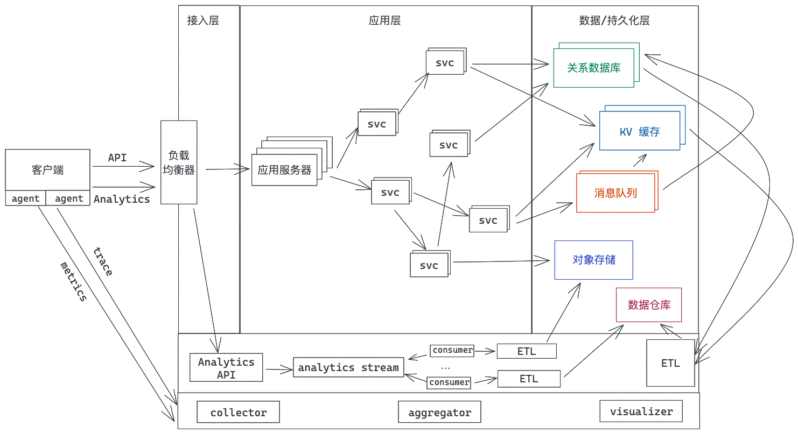

- 00 开篇词 让Rust成为你的下一门主力语言.md.html
- 01 内存：值放堆上还是放栈上，这是一个问题.md.html
- 02 串讲：编程开发中，那些你需要掌握的基本概念.md.html
- 03 初窥门径：从你的第一个Rust程序开始！.md.html
- 04 get hands dirty：来写个实用的CLI小工具.md.html
- 05 get hands dirty：做一个图片服务器有多难？.md.html
- 06 get hands dirty：SQL查询工具怎么一鱼多吃？.md.html
- 07 所有权：值的生杀大权到底在谁手上？.md.html
- 08 所有权：值的借用是如何工作的？.md.html
- 09 所有权：一个值可以有多个所有者么？.md.html
- 10 生命周期：你创建的值究竟能活多久？.md.html
- 11 内存管理：从创建到消亡，值都经历了什么？.md.html
- 12 类型系统：Rust的类型系统有什么特点？.md.html
- 13 类型系统：如何使用trait来定义接口？.md.html
- 14 类型系统：有哪些必须掌握的trait？.md.html
- 15 数据结构：这些浓眉大眼的结构竟然都是智能指针？.md.html
- 16 数据结构：Vec_T_、&[T]、Box_[T]_ ，你真的了解集合容器么？.md.html
- 17 数据结构：软件系统核心部件哈希表，内存如何布局？.md.html
- 18 错误处理：为什么Rust的错误处理与众不同？.md.html
- 19 闭包：FnOnce、FnMut和Fn，为什么有这么多类型？.md.html
- 20 4 Steps ：如何更好地阅读Rust源码？.md.html
- 21 阶段实操（1）：构建一个简单的KV server-基本流程.md.html
- 22 阶段实操（2）：构建一个简单的KV server-基本流程.md.html
- 23 类型系统：如何在实战中使用泛型编程？.md.html
- 24 类型系统：如何在实战中使用trait object？.md.html
- 25 类型系统：如何围绕trait来设计和架构系统？.md.html
- 26 阶段实操（3）：构建一个简单的KV server-高级trait技巧.md.html
- 27 生态系统：有哪些常有的Rust库可以为我所用？.md.html
- 28 网络开发（上）：如何使用Rust处理网络请求？.md.html
- 29 网络开发（下）：如何使用Rust处理网络请求？.md.html
- 30 Unsafe Rust：如何用C++的方式打开Rust？.md.html
- 31 FFI：Rust如何和你的语言架起沟通桥梁？.md.html
- 32 实操项目：使用PyO3开发Python3模块.md.html
- 33 并发处理（上）：从atomics到Channel，Rust都提供了什么工具？.md.html
- 34 并发处理（下）：从atomics到Channel，Rust都提供了什么工具？.md.html
- 35 实操项目：如何实现一个基本的MPSC channel？.md.html
- 36 阶段实操（4）：构建一个简单的KV server-网络处理.md.html
- 37 阶段实操（5）：构建一个简单的KV server-网络安全.md.html
- 38 异步处理：Future是什么？它和async_await是什么关系？.md.html
- 39 异步处理：async_await内部是怎么实现的？.md.html
- 40 异步处理：如何处理异步IO？.md.html
- 41 阶段实操（6）：构建一个简单的KV server-异步处理.md.html
- 42 阶段实操（7）：构建一个简单的KV server-如何做大的重构？.md.html
- 43 生产环境：真实世界下的一个Rust项目包含哪些要素？.md.html
- 44 数据处理：应用程序和数据如何打交道？.md.html
- 45 阶段实操（8）：构建一个简单的KV server-配置_测试_监控_CI_CD.md.html
- 46 软件架构：如何用Rust架构复杂系统？.md.html
- 加餐 Rust2021版次问世了！.md.html
- 加餐 代码即数据：为什么我们需要宏编程能力？.md.html
- 加餐 宏编程（上）：用最“笨”的方式撰写宏.md.html
- 加餐 宏编程（下）：用 syn_quote 优雅地构建宏.md.html
- 加餐 愚昧之巅：你的Rust学习常见问题汇总.md.html
- 加餐 期中测试：参考实现讲解.md.html
- 加餐 期中测试：来写一个简单的grep命令行.md.html
- 加餐 这个专栏你可以怎么学，以及Rust是否值得学？.md.html
- 大咖助场 开悟之坡（上）：Rust的现状、机遇与挑战.md.html
- 大咖助场 开悟之坡（下）：Rust的现状、机遇与挑战.md.html
- 特别策划 学习锦囊（一）：听听课代表们怎么说.md.html
- 特别策划 学习锦囊（三）：听听课代表们怎么说.md.html
- 特别策划 学习锦囊（二）：听听课代表们怎么说.md.html
- 用户故事 绝望之谷：改变从学习开始.md.html
- 用户故事 语言不仅是工具，还是思维方式.md.html
- 结束语 永续之原：Rust学习，如何持续精进？.md.html
- 捐赠
44 数据处理：应用程序和数据如何打交道？
你好，我是陈天。
我们开发者无论是从事服务端的开发，还是客户端的开发，和数据打交道是必不可少的。
对于客户端来说，从服务端读取到的数据，往往需要做缓存（内存缓存或者 SQLite 缓存），甚至需要本地存储（文件或者 SQLite）。
对于服务器来说，跟数据打交道的场景就更加丰富了。除了数据库和缓存外，还有大量文本数据的索引（比如搜索引擎）、实时的消息队列对数据做流式处理，或者非实时的批处理对数据仓库（data warehouse）中的海量数据进行 ETL（Extract、Transform and Load）。

今天我们就来讲讲如何用 Rust 做数据处理，主要讲两部分，如何用 Rust 访问关系数据库，以及如何用 Rust 对半结构化数据进行分析和处理。希望通过学习这一讲的内容，尤其是后半部分的内容，能帮你打开眼界，对数据处理有更加深刻的认识。
访问关系数据库
作为互联网应用的最主要的数据存储和访问工具，关系数据库，是几乎每门编程语言都有良好支持的数据库类型。
在 Rust 下，有几乎所有主流关系数据库的驱动，比如 rust-postgres、rust-mysql-simple 等，不过一般我们不太会直接使用数据库的驱动来访问数据库，因为那样会让应用过于耦合于某个数据库，所以我们会使用 ORM。
Rust 下有 diesel 这个非常成熟的 ORM，还有 sea-orm 这样的后起之秀。diesel 不支持异步，而 sea-orm 支持异步，所以，有理由相信，随着 sea-orm 的不断成熟，会有越来越多的应用在 sea-orm 上构建。
如果你觉得 ORM 太过笨重，繁文缛节太多，但又不想直接使用某个数据库的驱动来访问数据库，那么你还可以用 sqlx。sqlx 提供了对多种数据库（Postgres、MySQL、SQLite、MSSQL）的异步访问支持，并且不使用 DSL 就可以对 SQL query 做编译时检查，非常轻便；它可以从数据库中直接查询出来一行数据，也可以通过派生宏自动把行数据转换成对应的结构。
今天，我们就尝试使用 sqlx 处理用户注册和登录这两个非常常见的功能。
sqlx
构建下面的表结构来处理用户登录信息：
CREATE TABLE IF NOT EXISTS users
(
id INTEGER PRIMARY KEY NOT NULL,
email VARCHAR UNIQUE NOT NULL,
hashed_password VARCHAR NOT NULL
);
特别说明一下，在数据库中存储用户信息需要非常谨慎，尤其是涉及敏感的数据，比如密码，需要使用特定的哈希算法存储。OWASP 对密码的存储有如下安全建议：
- 如果 Argon2id 可用，那么使用 Argon2id（需要目标机器至少有 15MB 内存）。
- 如果 Argon2id 不可用，那么使用 bcrypt（算法至少迭代 10 次）。
- 之后再考虑 scrypt/PBKDF2。
Argon2id 是 Argon2d 和 Argon2i 的组合，Argon2d 提供了强大的抗 GPU 破解能力，但在特定情况下会容易遭受旁路攻击（side-channel attacks），而 Argon2i 则可以防止旁路攻击，但抗 GPU 破解稍弱。所以只要是编程语言支持 Argo2id，那么它就是首选的密码哈希工具。
Rust 下有完善的 password-hashes 工具，我们可以使用其中的 argon2 crate，用它生成的一个完整的，包含所有参数的密码哈希长这个样子：
$argon2id$v=19$m=4096,t=3,p=1$l7IEIWV7puJYJAZHyyut8A$OPxL09ODxp/xDQEnlG1NWdOsTr7RzuleBtiYQsnCyXY
这个字符串里包含了 argon2id 的版本（19）、使用的内存大小（4096k）、迭代次数（3 次）、并行程度（1 个线程），以及 base64 编码的 salt 和 hash。
所以，当新用户注册时，我们使用 argon2 把传入的密码哈希一下，存储到数据库中；当用户使用 email/password 登录时，我们通过 email 找到用户，然后再通过 argon2 验证密码。数据库的访问使用 sqlx，为了简单起见，避免安装额外的数据库，就使用 SQLite来存储数据（如果你本地有 MySQL 或者 PostgreSQL，可以自行替换相应的语句）。
有了这个思路，我们创建一个新的项目，添加相关的依赖：
[dev-dependencies]
anyhow = "1"
argon2 = "0.3"
lazy_static = "1"
rand_core = { version = "0.6", features = ["std"] }
sqlx = { version = "0.5", features = ["runtime-tokio-rustls", "sqlite"] }
tokio = { version = "1", features = ["full" ] }
然后创建 examples/user.rs，添入代码，你可以对照详细的注释来理解：
use anyhow::{anyhow, Result};
use argon2::{
password_hash::{rand_core::OsRng, PasswordHash, PasswordHasher, SaltString},
Argon2, PasswordVerifier,
};
use lazy_static::lazy_static;
use sqlx::{sqlite::SqlitePoolOptions, SqlitePool};
use std::env;
/// Argon2 hash 使用的密码
const ARGON_SECRET: &[u8] = b"deadbeef";
lazy_static! {
/// Argon2
static ref ARGON2: Argon2<'static> = Argon2::new_with_secret(
ARGON_SECRET,
argon2::Algorithm::default(),
argon2::Version::default(),
argon2::Params::default()
)
.unwrap();
}
/// user 表对应的数据结构，处理 login/register
pub struct UserDb {
pool: SqlitePool,
}
/// 使用 FromRow 派生宏把从数据库中读取出来的数据转换成 User 结构
#[allow(dead_code)]
#[derive(Debug, sqlx::FromRow)]
pub struct User {
id: i64,
email: String,
hashed_password: String,
}
impl UserDb {
pub fn new(pool: SqlitePool) -> Self {
Self { pool }
}
/// 用户注册：在 users 表中存储 argon2 哈希过的密码
pub async fn register(&self, email: &str, password: &str) -> Result<i64> {
let hashed_password = generate_password_hash(password)?;
let id = sqlx::query("INSERT INTO users(email, hashed_password) VALUES (?, ?)")
.bind(email)
.bind(hashed_password)
.execute(&self.pool)
.await?
.last_insert_rowid();
Ok(id)
}
/// 用户登录：从 users 表中获取用户信息，并用验证用户密码
pub async fn login(&self, email: &str, password: &str) -> Result<String> {
let user: User = sqlx::query_as("SELECT * from users WHERE email = ?")
.bind(email)
.fetch_one(&self.pool)
.await?;
println!("find user: {:?}", user);
if let Err(_) = verify_password(password, &user.hashed_password) {
return Err(anyhow!("failed to login"));
}
// 生成 JWT token（此处省略 JWT token 生成的细节）
Ok("awesome token".into())
}
}
/// 重新创建 users 表
async fn recreate_table(pool: &SqlitePool) -> Result<()> {
sqlx::query("DROP TABLE IF EXISTS users").execute(pool).await?;
sqlx::query(
r#"CREATE TABLE IF NOT EXISTS users(
id INTEGER PRIMARY KEY NOT NULL,
email VARCHAR UNIQUE NOT NULL,
hashed_password VARCHAR NOT NULL)"#,
)
.execute(pool)
.await?;
Ok(())
}
/// 创建安全的密码哈希
fn generate_password_hash(password: &str) -> Result<String> {
let salt = SaltString::generate(&mut OsRng);
Ok(ARGON2
.hash_password(password.as_bytes(), &salt)
.map_err(|_| anyhow!("failed to hash password"))?
.to_string())
}
/// 使用 argon2 验证用户密码和密码哈希
fn verify_password(password: &str, password_hash: &str) -> Result<()> {
let parsed_hash =
PasswordHash::new(password_hash).map_err(|_| anyhow!("failed to parse hashed password"))?;
ARGON2
.verify_password(password.as_bytes(), &parsed_hash)
.map_err(|_| anyhow!("failed to verify password"))?;
Ok(())
}
#[tokio::main]
async fn main() -> Result<()> {
let url = env::var("DATABASE_URL").unwrap_or("sqlite://./data/example.db".into());
// 创建连接池
let pool = SqlitePoolOptions::new()
.max_connections(5)
.connect(&url)
.await?;
// 每次运行都重新创建 users 表
recreate_table(&pool).await?;
let user_db = UserDb::new(pool.clone());
let email = "[email protected]";
let password = "hunter42";
// 新用户注册
let id = user_db.register(email, password).await?;
println!("registered id: {}", id);
// 用户成功登录
let token = user_db.login(email, password).await?;
println!("Login succeeded: {}", token);
// 登录失败
let result = user_db.login(email, "badpass").await;
println!("Login should fail with bad password: {:?}", result);
Ok(())
}
在这段代码里，我们把 argon2 的能力稍微包装了一下，提供了 generate_password_hash 和 verify_password 两个方法给注册和登录使用。对于数据库的访问，我们提供了一个连接池 SqlitePool，便于无锁访问。
你可能注意到了这句写法：
let user: User = sqlx::query_as("SELECT * from users WHERE email = ?")
.bind(email)
.fetch_one(&self.pool)
.await?;
是不是很惊讶，一般来说，这是 ORM 才有的功能啊。没错，它再次体现了 Rust trait 的强大：我们并不需要 ORM 就可以把数据库中的数据跟某个 Model 结合起来，只需要在查询时，提供想要转换成的数据结构 T: FromRow 即可。
看 query_as 函数和 FromRow trait 的定义（代码）：
pub fn query_as<'q, DB, O>(sql: &'q str) -> QueryAs<'q, DB, O, <DB as HasArguments<'q>>::Arguments>
where
DB: Database,
O: for<'r> FromRow<'r, DB::Row>,
{
QueryAs {
inner: query(sql),
output: PhantomData,
}
}
pub trait FromRow<'r, R: Row>: Sized {
fn from_row(row: &'r R) -> Result<Self, Error>;
}
要让一个数据结构支持 FromRow，很简单，使用 sqlx::FromRow 派生宏即可：
#[derive(Debug, sqlx::FromRow)]
pub struct User {
id: i64,
email: String,
hashed_password: String,
}
希望这个例子可以让你体会到 Rust 处理数据库的强大和简约。我们用 Rust 写出了 Node.js/Python 都不曾拥有的直观感受。另外，sqlx 是一个非常漂亮的 crate，有空的话建议你也看看它的源代码，开头介绍的 sea-orm，底层也是使用了 sqlx。
特别说明，以上例子如果运行失败，可以去GitHub上把 example.db 拷贝到本地 data 目录下，然后运行。
用 Rust 对半结构化数据进行分析
在生产环境中，我们会累积大量的半结构化数据，比如各种各样的日志、监控数据和分析数据。
以日志为例，虽然通常会将其灌入日志分析工具，通过可视化界面进行分析和问题追踪，但偶尔我们也需要自己写点小工具进行处理，一般，会用 Python 来处理这样的任务，因为 Python 有 pandas 这样用起来非常舒服的工具。然而，pandas 太吃内存，运算效率也不算高。有没有更好的选择呢？
在第 6 讲我们介绍过 polars，也用 polars 和 sqlparser 写了一个处理 csv 的工具，其实 polars 底层使用了 Apache arrow。如果你经常进行大数据处理，那么你对列式存储（columnar datastore）和 Data Frame 应该比较熟悉，arrow 就是一个在内存中进行存储和运算的列式存储，它是构建下一代数据分析平台的基础软件。
由于 Rust 在业界的地位越来越重要，Apache arrow 也构建了完全用 Rust 实现的版本，并在此基础上构建了高效的 in-memory 查询引擎 datafusion ，以及在某些场景下可以取代 Spark 的分布式查询引擎 ballista。
Apache arrow 和 datafusion 目前已经有很多重磅级的应用，其中最令人兴奋的是 InfluxDB IOx，它是下一代的 InfluxDB 的核心引擎。
来一起感受一下 datafusion 如何使用：
use datafusion::prelude::*;
use datafusion::arrow::util::pretty::print_batches;
use datafusion::arrow::record_batch::RecordBatch;
#[tokio::main]
async fn main() -> datafusion::error::Result<()> {
// register the table
let mut ctx = ExecutionContext::new();
ctx.register_csv("example", "tests/example.csv", CsvReadOptions::new()).await?;
// create a plan to run a SQL query
let df = ctx.sql("SELECT a, MIN(b) FROM example GROUP BY a LIMIT 100").await?;
// execute and print results
df.show().await?;
Ok(())
}
在这段代码中，我们通过 CsvReadOptions 推断 CSV 的 schema，然后将其注册为一个逻辑上的 example 表，之后就可以通过 SQL 进行查询了，是不是非常强大？
下面我们就使用 datafusion，来构建一个 Nginx 日志的命令行分析工具。
datafusion
在这门课程的 GitHub repo 里，我放了个从网上找到的样本日志，改名为 nginx_logs.csv（注意后缀需要是 csv），其格式如下：
93.180.71.3 - - "17/May/2015:08:05:32 +0000" GET "/downloads/product_1" "HTTP/1.1" 304 0 "-" "Debian APT-HTTP/1.3 (0.8.16~exp12ubuntu10.21)"
93.180.71.3 - - "17/May/2015:08:05:23 +0000" GET "/downloads/product_1" "HTTP/1.1" 304 0 "-" "Debian APT-HTTP/1.3 (0.8.16~exp12ubuntu10.21)"
80.91.33.133 - - "17/May/2015:08:05:24 +0000" GET "/downloads/product_1" "HTTP/1.1" 304 0 "-" "Debian APT-HTTP/1.3 (0.8.16~exp12ubuntu10.17)"
这个日志共有十个域，除了几个 “-”，无法猜测到是什么内容外，其它的域都很好猜测。
由于 nginx_logs 的格式是在 Nginx 配置中构建的，所以，日志文件，并不像 CSV 文件那样有一行 header，没有 header，就无法让 datafusion 直接帮我们推断出 schema，也就是说我们需要显式地告诉 datafusion 日志文件的 schema 长什么样。
不过对于 datafusuion 来说，创建一个 schema 很简单，比如：
let schema = Arc::new(Schema::new(vec![
Field::new("ip", DataType::Utf8, false),
Field::new("code", DataType::Int32, false),
]));
为了最大的灵活性，我们可以对应地构建一个简单的 schema 定义文件，里面每个字段按顺序对应 nginx 日志的字段：
---
- name: ip
type: string
- name: unused1
type: string
- name: unused2
type: string
- name: date
type: string
- name: method
type: string
- name: url
type: string
- name: version
type: string
- name: code
type: integer
- name: len
type: integer
- name: unused3
type: string
- name: ua
type: string
这样，未来如果遇到不一样的日志文件，我们可以修改 schema 的定义，而无需修改程序本身。
对于这个 schema 定义文件，使用 serde 和 serde-yaml 来读取，然后再实现 From trait 把 SchemaField 对应到 datafusion 的 Field 结构：
#[derive(Debug, Clone, Serialize, Deserialize, PartialEq, Eq, PartialOrd, Ord, Hash)]
#[serde(rename_all = "snake_case")]
pub enum SchemaDataType {
/// Int64
Integer,
/// Utf8
String,
/// Date64,
Date,
}
#[derive(Serialize, Deserialize, Debug, Clone, PartialEq, Eq, Hash, PartialOrd, Ord)]
struct SchemaField {
name: String,
#[serde(rename = "type")]
pub(crate) data_type: SchemaDataType,
}
#[derive(Serialize, Deserialize, Debug, Clone, PartialEq, Eq, Hash, PartialOrd, Ord)]
struct SchemaFields(Vec<SchemaField>);
impl From<SchemaDataType> for DataType {
fn from(dt: SchemaDataType) -> Self {
match dt {
SchemaDataType::Integer => Self::Int64,
SchemaDataType::Date => Self::Date64,
SchemaDataType::String => Self::Utf8,
}
}
}
impl From<SchemaField> for Field {
fn from(f: SchemaField) -> Self {
Self::new(&f.name, f.data_type.into(), false)
}
}
impl From<SchemaFields> for SchemaRef {
fn from(fields: SchemaFields) -> Self {
let fields: Vec<Field> = fields.0.into_iter().map(|f| f.into()).collect();
Arc::new(Schema::new(fields))
}
}
有了这个基本的 schema 转换的功能，就可以构建我们的 nginx 日志处理结构及其功能了：
/// nginx 日志处理的数据结构
pub struct NginxLog {
ctx: ExecutionContext,
}
impl NginxLog {
/// 根据 schema 定义，数据文件以及分隔符构建 NginxLog 结构
pub async fn try_new(schema_file: &str, data_file: &str, delim: u8) -> Result<Self> {
let content = tokio::fs::read_to_string(schema_file).await?;
let fields: SchemaFields = serde_yaml::from_str(&content)?;
let schema = SchemaRef::from(fields);
let mut ctx = ExecutionContext::new();
let options = CsvReadOptions::new()
.has_header(false)
.delimiter(delim)
.schema(&schema);
ctx.register_csv("nginx", data_file, options).await?;
Ok(Self { ctx })
}
/// 进行 sql 查询
pub async fn query(&mut self, query: &str) -> Result<Arc<dyn DataFrame>> {
let df = self.ctx.sql(query).await?;
Ok(df)
}
}
仅仅写了 80 行代码，就完成了 nginx 日志文件的读取、解析和查询功能，其中 50 行代码还是为了处理 schema 配置文件。是不是有点不敢相信自己的眼睛？
datafusion/arrow 也太强大了吧？这个简洁的背后，是 10w 行 arrow 代码和 1w 行 datafusion 代码的功劳。
再来写段代码调用它：
#[tokio::main]
async fn main() -> Result<()> {
let mut nginx_log =
NginxLog::try_new("fixtures/log_schema.yml", "fixtures/nginx_logs.csv", b' ').await?;
// 从 stdin 中按行读取内容，当做 sql 查询，进行处理
let stdin = io::stdin();
let mut lines = stdin.lock().lines();
while let Some(Ok(line)) = lines.next() {
if !line.starts_with("--") {
println!("{}", line);
// 读到一行 sql，查询，获取 dataframe
let df = nginx_log.query(&line).await?;
// 简单显示 dataframe
df.show().await?;
}
}
Ok(())
}
在这段代码里，我们从 stdin 中获取内容，把每一行输入都作为一个 SQL 语句传给 nginx_log.query，然后显示查询结果。
来测试一下：
❯ echo "SELECT ip, count(*) as total, cast(avg(len) as int) as avg_len FROM nginx GROUP BY ip ORDER BY total DESC LIMIT 10" | cargo run --example log --quiet
SELECT ip, count(*) as total, cast(avg(len) as int) as avg_len FROM nginx GROUP BY ip ORDER BY total DESC LIMIT 10
+-----------------+-------+---------+
| ip | total | avg_len |
+-----------------+-------+---------+
| 216.46.173.126 | 2350 | 220 |
| 180.179.174.219 | 1720 | 292 |
| 204.77.168.241 | 1439 | 340 |
| 65.39.197.164 | 1365 | 241 |
| 80.91.33.133 | 1202 | 243 |
| 84.208.15.12 | 1120 | 197 |
| 74.125.60.158 | 1084 | 300 |
| 119.252.76.162 | 1064 | 281 |
| 79.136.114.202 | 628 | 280 |
| 54.207.57.55 | 532 | 289 |
+-----------------+-------+---------+
是不是挺厉害？我们可以充分利用 SQL 的强大表现力，做各种复杂的查询。不光如此，还可以从一个包含了多个 sql 语句的文件中，一次性做多个查询。比如我创建了这样一个文件 analyze.sql：
-- 查询 ip 前 10 名
SELECT ip, count(*) as total, cast(avg(len) as int) as avg_len FROM nginx GROUP BY ip ORDER BY total DESC LIMIT 10
-- 查询 UA 前 10 名
select ua, count(*) as total from nginx group by ua order by total desc limit 10
-- 查询访问最多的 url 前 10 名
select url, count(*) as total from nginx group by url order by total desc limit 10
-- 查询访问返回 body 长度前 10 名
select len, count(*) as total from nginx group by len order by total desc limit 10
-- 查询 HEAD 请求
select ip, date, url, code, ua from nginx where method = 'HEAD' limit 10
-- 查询状态码是 403 的请求
select ip, date, url, ua from nginx where code = 403 limit 10
-- 查询 UA 为空的请求
select ip, date, url, code from nginx where ua = '-' limit 10
-- 复杂查询，找返回 body 长度的 percentile 在 0.5-0.7 之间的数据
select * from (select ip, date, url, ua, len, PERCENT_RANK() OVER (ORDER BY len) as len_percentile from nginx where code = 200 order by len desc) as t where t.len_percentile > 0.5 and t.len_percentile < 0.7 order by t.len_percentile desc limit 10
那么，我可以这样获取结果：
❯ cat fixtures/analyze.sql | cargo run --example log --quiet
SELECT ip, count(*) as total, cast(avg(len) as int) as avg_len FROM nginx GROUP BY ip ORDER BY total DESC LIMIT 10
+-----------------+-------+---------+
| ip | total | avg_len |
+-----------------+-------+---------+
| 216.46.173.126 | 2350 | 220 |
| 180.179.174.219 | 1720 | 292 |
| 204.77.168.241 | 1439 | 340 |
| 65.39.197.164 | 1365 | 241 |
| 80.91.33.133 | 1202 | 243 |
| 84.208.15.12 | 1120 | 197 |
| 74.125.60.158 | 1084 | 300 |
| 119.252.76.162 | 1064 | 281 |
| 79.136.114.202 | 628 | 280 |
| 54.207.57.55 | 532 | 289 |
+-----------------+-------+---------+
select ua, count(*) as total from nginx group by ua order by total desc limit 10
+-----------------------------------------------+-------+
| ua | total |
+-----------------------------------------------+-------+
| Debian APT-HTTP/1.3 (1.0.1ubuntu2) | 11830 |
| Debian APT-HTTP/1.3 (0.9.7.9) | 11365 |
| Debian APT-HTTP/1.3 (0.8.16~exp12ubuntu10.21) | 6719 |
| Debian APT-HTTP/1.3 (0.8.16~exp12ubuntu10.16) | 5740 |
| Debian APT-HTTP/1.3 (0.8.16~exp12ubuntu10.22) | 3855 |
| Debian APT-HTTP/1.3 (0.8.16~exp12ubuntu10.17) | 1827 |
| Debian APT-HTTP/1.3 (0.8.16~exp12ubuntu10.7) | 1255 |
| urlgrabber/3.9.1 yum/3.2.29 | 792 |
| Debian APT-HTTP/1.3 (0.9.7.8) | 750 |
| urlgrabber/3.9.1 yum/3.4.3 | 708 |
+-----------------------------------------------+-------+
select url, count(*) as total from nginx group by url order by total desc limit 10
+----------------------+-------+
| url | total |
+----------------------+-------+
| /downloads/product_1 | 30285 |
| /downloads/product_2 | 21104 |
| /downloads/product_3 | 73 |
+----------------------+-------+
select len, count(*) as total from nginx group by len order by total desc limit 10
+-----+-------+
| len | total |
+-----+-------+
| 0 | 13413 |
| 336 | 6652 |
| 333 | 3771 |
| 338 | 3393 |
| 337 | 3268 |
| 339 | 2999 |
| 331 | 2867 |
| 340 | 1629 |
| 334 | 1393 |
| 332 | 1240 |
+-----+-------+
select ip, date, url, code, ua from nginx where method = 'HEAD' limit 10
+----------------+----------------------------+----------------------+------+-------------------------+
| ip | date | url | code | ua |
+----------------+----------------------------+----------------------+------+-------------------------+
| 184.173.149.15 | 23/May/2015:15:05:53 +0000 | /downloads/product_2 | 403 | Wget/1.13.4 (linux-gnu) |
| 5.153.24.140 | 23/May/2015:17:05:30 +0000 | /downloads/product_2 | 200 | Wget/1.13.4 (linux-gnu) |
| 5.153.24.140 | 23/May/2015:17:05:33 +0000 | /downloads/product_2 | 403 | Wget/1.13.4 (linux-gnu) |
| 5.153.24.140 | 23/May/2015:17:05:34 +0000 | /downloads/product_2 | 403 | Wget/1.13.4 (linux-gnu) |
| 5.153.24.140 | 23/May/2015:17:05:52 +0000 | /downloads/product_2 | 200 | Wget/1.13.4 (linux-gnu) |
| 5.153.24.140 | 23/May/2015:17:05:43 +0000 | /downloads/product_2 | 200 | Wget/1.13.4 (linux-gnu) |
| 5.153.24.140 | 23/May/2015:17:05:42 +0000 | /downloads/product_2 | 200 | Wget/1.13.4 (linux-gnu) |
| 5.153.24.140 | 23/May/2015:17:05:46 +0000 | /downloads/product_2 | 200 | Wget/1.13.4 (linux-gnu) |
| 5.153.24.140 | 23/May/2015:18:05:10 +0000 | /downloads/product_2 | 200 | Wget/1.13.4 (linux-gnu) |
| 184.173.149.16 | 24/May/2015:18:05:37 +0000 | /downloads/product_2 | 403 | Wget/1.13.4 (linux-gnu) |
+----------------+----------------------------+----------------------+------+-------------------------+
select ip, date, url, ua from nginx where code = 403 limit 10
+----------------+----------------------------+----------------------+-----------------------------------------------------------------------------------------------------+
| ip | date | url | ua |
+----------------+----------------------------+----------------------+-----------------------------------------------------------------------------------------------------+
| 184.173.149.15 | 23/May/2015:15:05:53 +0000 | /downloads/product_2 | Wget/1.13.4 (linux-gnu) |
| 5.153.24.140 | 23/May/2015:17:05:33 +0000 | /downloads/product_2 | Wget/1.13.4 (linux-gnu) |
| 5.153.24.140 | 23/May/2015:17:05:34 +0000 | /downloads/product_2 | Wget/1.13.4 (linux-gnu) |
| 184.173.149.16 | 24/May/2015:18:05:37 +0000 | /downloads/product_2 | Wget/1.13.4 (linux-gnu) |
| 195.88.195.153 | 24/May/2015:23:05:05 +0000 | /downloads/product_2 | curl/7.22.0 (x86_64-pc-linux-gnu) libcurl/7.22.0 OpenSSL/1.0.1 zlib/1.2.3.4 libidn/1.23 librtmp/2.3 |
| 184.173.149.15 | 25/May/2015:04:05:14 +0000 | /downloads/product_2 | Wget/1.13.4 (linux-gnu) |
| 87.85.173.82 | 17/May/2015:14:05:07 +0000 | /downloads/product_2 | Wget/1.13.4 (linux-gnu) |
| 87.85.173.82 | 17/May/2015:14:05:11 +0000 | /downloads/product_2 | Wget/1.13.4 (linux-gnu) |
| 194.76.107.17 | 17/May/2015:16:05:50 +0000 | /downloads/product_2 | Wget/1.13.4 (linux-gnu) |
| 194.76.107.17 | 17/May/2015:17:05:40 +0000 | /downloads/product_2 | Wget/1.13.4 (linux-gnu) |
+----------------+----------------------------+----------------------+-----------------------------------------------------------------------------------------------------+
select ip, date, url, code from nginx where ua = '-' limit 10
+----------------+----------------------------+----------------------+------+
| ip | date | url | code |
+----------------+----------------------------+----------------------+------+
| 217.168.17.150 | 01/Jun/2015:14:06:45 +0000 | /downloads/product_2 | 200 |
| 217.168.17.180 | 01/Jun/2015:14:06:15 +0000 | /downloads/product_2 | 200 |
| 217.168.17.150 | 01/Jun/2015:14:06:18 +0000 | /downloads/product_1 | 200 |
| 204.197.211.70 | 24/May/2015:06:05:02 +0000 | /downloads/product_2 | 200 |
| 91.74.184.74 | 29/May/2015:14:05:17 +0000 | /downloads/product_2 | 403 |
| 91.74.184.74 | 29/May/2015:15:05:43 +0000 | /downloads/product_2 | 403 |
| 91.74.184.74 | 29/May/2015:22:05:53 +0000 | /downloads/product_2 | 403 |
| 217.168.17.5 | 31/May/2015:02:05:16 +0000 | /downloads/product_2 | 200 |
| 217.168.17.180 | 20/May/2015:23:05:22 +0000 | /downloads/product_2 | 200 |
| 204.197.211.70 | 21/May/2015:02:05:34 +0000 | /downloads/product_2 | 200 |
+----------------+----------------------------+----------------------+------+
select * from (select ip, date, url, ua, len, PERCENT_RANK() OVER (ORDER BY len) as len_percentile from nginx where code = 200 order by len desc) as t where t.len_percentile > 0.5 and t.len_percentile < 0.7 order by t.len_percentile desc limit 10
+----------------+----------------------------+----------------------+-----------------------------+------+--------------------+
| ip | date | url | ua | len | len_percentile |
+----------------+----------------------------+----------------------+-----------------------------+------+--------------------+
| 54.229.83.18 | 26/May/2015:00:05:34 +0000 | /downloads/product_1 | urlgrabber/3.9.1 yum/3.4.3 | 2592 | 0.6342190216041719 |
| 54.244.37.198 | 18/May/2015:10:05:39 +0000 | /downloads/product_1 | urlgrabber/3.9.1 yum/3.4.3 | 2592 | 0.6342190216041719 |
| 67.132.206.254 | 29/May/2015:07:05:52 +0000 | /downloads/product_1 | urlgrabber/3.9.1 yum/3.2.29 | 2592 | 0.6342190216041719 |
| 128.199.60.184 | 24/May/2015:00:05:09 +0000 | /downloads/product_1 | urlgrabber/3.10 yum/3.4.3 | 2592 | 0.6342190216041719 |
| 54.173.6.142 | 27/May/2015:14:05:21 +0000 | /downloads/product_1 | urlgrabber/3.9.1 yum/3.4.3 | 2592 | 0.6342190216041719 |
| 104.156.250.12 | 03/Jun/2015:11:06:51 +0000 | /downloads/product_1 | urlgrabber/3.9.1 yum/3.2.29 | 2592 | 0.6342190216041719 |
| 115.198.47.126 | 25/May/2015:11:05:13 +0000 | /downloads/product_1 | urlgrabber/3.10 yum/3.4.3 | 2592 | 0.6342190216041719 |
| 198.105.198.4 | 29/May/2015:07:05:34 +0000 | /downloads/product_1 | urlgrabber/3.9.1 yum/3.2.29 | 2592 | 0.6342190216041719 |
| 107.23.164.80 | 31/May/2015:09:05:34 +0000 | /downloads/product_1 | urlgrabber/3.9.1 yum/3.4.3 | 2592 | 0.6342190216041719 |
| 108.61.251.29 | 31/May/2015:10:05:16 +0000 | /downloads/product_1 | urlgrabber/3.9.1 yum/3.2.29 | 2592 | 0.6342190216041719 |
+----------------+----------------------------+----------------------+-----------------------------+------+--------------------+
小结
今天我们介绍了如何使用 Rust 处理存放在关系数据库中的结构化数据，以及存放在文件系统中的半结构化数据。
虽然在工作中，我们不太会使用 arrow/datafusion 去创建某个“下一代”的数据处理平台，但拥有了处理半结构化数据的能力，可以解决很多非常实际的问题。
比如每隔 10 分钟扫描 Nginx/CDN，以及应用服务器过去 10 分钟的日志，找到某些非正常的访问，然后把该用户/设备的访问切断一阵子。这样的特殊需求，一般的数据平台很难处理，需要我们自己撰写代码来实现。此时，arrow/datafusion 这样的工具就很方便。
思考题
- 请你自己阅读 diesel 或者 sea-orm 的文档，然后尝试把我们直接用 sqlx 构建的用户注册/登录的功能使用 diesel 或者 sea-orm 实现。
- datafusion 不但支持 csv，还支持 ndJSON/parquet/avro 等数据类型。如果你公司的生产环境下有这些类型的半结构化数据，可以尝试着阅读相关文档，使用 datafusion 来读取和查询它们。
感谢你的收听。恭喜你完成了第44次Rust学习，打卡之旅马上就要结束啦，我们下节课见。
© 2019 - 2023 Liangliang Lee. Powered by gin and hexo-theme-book.